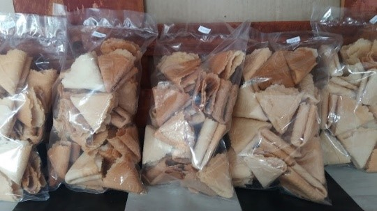

Prabumulih is a city in South Sumatra that was inaugurated as a city on
October 17, 2001. Many people must learn that Prabumulih has tourist
attractions, especially souvenir centers. Two interesting tourist attractions in
Prabumulih are the Prabumulih city park and the Prabumulih pineapple
agrotourism. For culinary purposes, I will visit several Prabumulih souvenir
centers to find out what typical Prabumulih foods are produced there. For
accessibility, visitors can use private transportation, such as bicycles,
motorbikes or cars, to get to these places.
Taman Kota Prabumulih
The first is
Prabumulih City Center.
Prabumulih City Center is a tourist attraction, a culinary destination, and a place
to relax and do sports activities. Prabumulih City Center is located on Ahmad Yani Street,
Gunung Ibul, East Prabumulih District, Prabumulih City, South Sumatra.
In the past, this park was a football field, and the field was often
used as a night fair tourist attraction. Then, this park was remade or
renovated. After completion, this park was officially designated as the
first city park on January 15th, 2015.
There is no entrance ticket to Prabumulih City Center. You only have to pay for
parking. So, everyone who wants to visit there only needs to pay for parking.
Inside Prabumulih City Center are tribunes, culinary outlets, a multi-purpose
building and a basketball court. While enjoying the atmosphere of the park,
visitors can enjoy the culinary delights in Prabumulih City Center, and too
many teenagers play skateboarding.
Another Images
On weekends, the park will be busy with visitors doing activities such as
sports and relaxing. Along the road until entering Prabumulih City Center,
it is usually used for culinary events and night markets. So, visitors
can enjoy food and play with the rides at the event.
Prabumulih Pineapple Agrotourism
The second is Prabumulih Pineapple Agrotourism. This place is used as
a center for developing pineapple cultivation and tourism
in Prabumulih City, which began to be planned and built in 2021 and was inaugurated in February 2023.
At Prabumulih Pineapple Agrotourism, visitors can enjoy the vast expanse
of pineapple gardens and take photos of the beautified pineapple garden,
complete with agrotourism writing in the middle of the garden as a photo
spot. Several small huts have been provided for visitors to relax and rest
while enjoying the atmosphere of the pineapple garden. According to employee
working hours, visitors can visit Prabumulih Pineapple Agrotourism from 07.00 a.m.
to 16.00 p.m. Prabumulih Pineapple Agrotourism is located in the Trans Bunut, Karang Jaya,
East Prabumulih District, Prabumulih City, South Sumatra.
Darrell Cake Shop
The third is Darrell Cake Shop. Darrell Cake Shop is one of the centers for typical
Prabumulih City souvenirs located on Krakatau Street, Gunung Ibul,
East Prabumulih Districtb, Prabumulih City, South Sumatra.
Another Images
Darrell Cake Shop produces typical food from Prabumulih, which is made from pineapple
as the main ingredient, such as Bolu Gulung Nanas, Kue Nastar Nanas,
and Pie Nanas. Not only that, but also does Darrell Cake Shop
sells other foods such as old-school cakes, caramel sponge
cake, tarts and pudding. To be able to visit it, Darrell Cake Shop operates
from 07.00 a.m. to 19.00 p.m.
Melati Oleh-Oleh Khas Prabumulih
The last one is Melati Oleh-Oleh Khas Prabumulih. Melati Oleh-Oleh Khas Prabumulih
is a shop that offers a variety of typical products from the city of Prabumulih,
South Sumatra. This shop produces various kinds of typical pineapple preparations,
namely Pineapple Dodol, Pineapple Wajik, Pineapple Pangsit, Pineapple Semprong,
Pineapple Kembang Goyang, Pineapple Chips, Pineapple Syrup, and Waconas.
One of its flagship products is Pineapple Chips, made from local pineapples
and known for their crunchy texture and distinctive sweet taste.
Another Images

Apart from that, Sirup Nanas is also a superior product from Melati Oleh-Oleh Khas Prabumulih. This syrup is
made from
thickened pineapple juice and mixed with sugar, producing a sweet and refreshing drink. Pineapple Syrup
can be enjoyed
with warm or cold water, offering a delicious and healthy drink option. Melati Oleh-Oleh Khas Prabumulih
produces
highlight local flavors and show how community creativity and innovation can produce high-quality products that
attract
tourists. To access these, tourists can use private or public transportation because the location of this place
is very
strategic and easy to find. Melati Oleh-Oleh Khas Prabumulih, is located on Basuki Rahmat Street,
Sukaraja, South
Prabumulih, Prabumulih City, South Sumatra. This shop is open every day from 08.00 a.m. to 17.30 p.m. for
operational
hours.
The Conclusion
Prabumulih, is one of cities in South Sumatra, has a rich history dating back to Dutch and Japanese occupations,
officially becoming a city on October 17th, 2001. The city is known for its tourist attractions and souvenir
centers. Notable places include Prabumulih City Park, a multi-functional city park offering sports, culinary
experiences, and a relaxing atmosphere, and Prabumulih Pineapple Agrotourism, a center for pineapple cultivation
and tourism with beautiful gardens and photbo spots. For local souvenirs, Darrell Cake Shop offers
pineapple-based treats such as Bolu Gulung Nanas and Kue Nastar Nanas, as well as various cakes and puddings.
Melati Oleh-Oleh Khas Prabumulih specializes in pineapple products like Keripik Nanas and Syrup Nanas,
showcasing the local flavors and community creativity. Both shops are easily accessible and highlight
Prabumulih's unique culinary heritage.
Contact Me
Hello viewers! Thank you for visiting my blog.
Let me introduce myself. My name is Sherly Cornelia,
and my friends usually call me Sherly. I am a student
t Sriwijaya State Polytechnic majoring in English Department.
I am from Prabumulih. If you want to know something about
Prabumulih, you can contact me. Thank you!
Sherly Cornelia
Indonesia, South Sumatera
@sherlycorn_
Sherly Cornelia
Travely.
Book your trip in minute, get full Control for much longer.